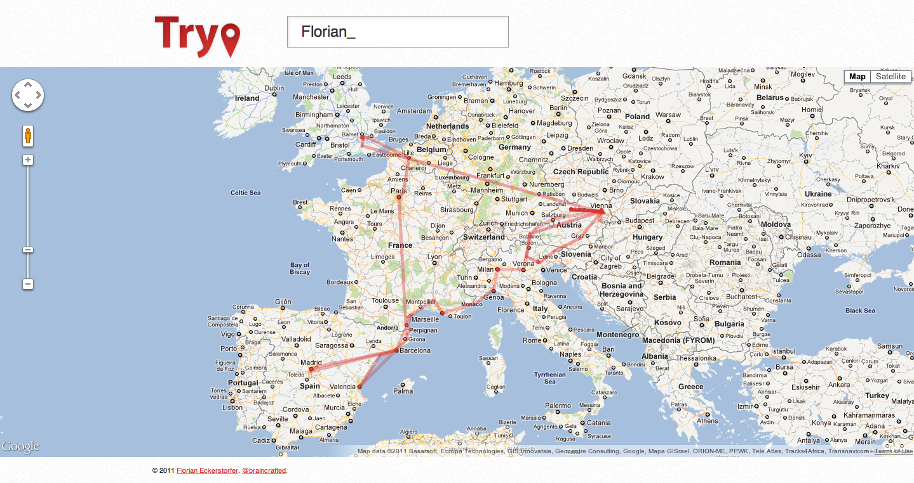

<div id="content" class="container">
    <div class="row">
        <div class="span8">

            <h2>{{ page.title }}</h2>

            <p>Displays a map with all the places where a Twitter user has been.</p>

            <p><a href="http://trypapp.com">http://trypapp.com</a> (The app no longer works)</p>

            <h3>Technologies &amp; Libraries</h3>

            <p>PHP, JavaScript, HTML, Sass, HTML5 Boilerplate, Cocur Dispatcher, Twig, jQuery, Google Maps API, Twitter API</p>

            <ul class="screenshots">
                <li></li>
            </ul>

            <p><small>Last modified: <em>{{ site.time | date_to_string }}</em></small></p>

        </div>
        <div class="span4">
            <strong>Related:</strong>
            <ul>
                <li><a href="../projects.html">Projects</a></li>
                <li><a href="../bio.html">About</a></li>
                <li><a href="../cv.html">Curriculum vitae</a></li>
                <li><a href="../contact.html">Contact</a></li>
            </ul>
        </div>
    </div>
</div>
